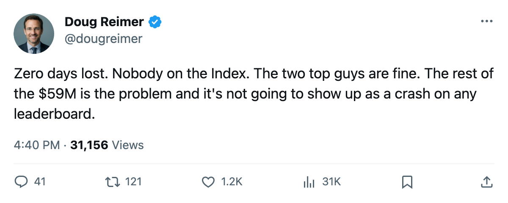
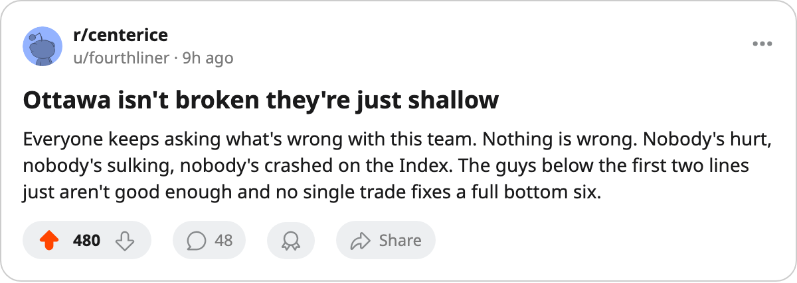

Ottawa Has 0 Days Lost, 89.6 Morale, and $8.47M a Point: The Roster Below Alfredsson and Havlat Is the Problem
The Senators' two stars are producing. Nobody rated below them is. The Development Index lists no Ottawa player, and the injury ledger shows zero days lost.
 Doug ReimerAnalytics editor, ex-video coach · The Slot Report
Doug ReimerAnalytics editor, ex-video coach · The Slot Report
 Ottawa Senators has produced 7 points in 10 games on a $59.27M payroll. The cost is $8.47M per point, the highest rate in the league. The next-worst is
Ottawa Senators has produced 7 points in 10 games on a $59.27M payroll. The cost is $8.47M per point, the highest rate in the league. The next-worst is  Phoenix Coyotes at $6.93M.
Phoenix Coyotes at $6.93M.
Ottawa has 5 injury spells and 0 days lost, tied for the fewest in hockey. Club morale sits at 89.6 (12th of 30). The Bureau's Development Index lists no Ottawa player on either the riser or faller side, which means nobody's form has shifted enough to register.
The gap is between two players producing and the rest of the roster not producing.
 Daniel Alfredsson91 is 89 in the Book, carries $11.40M with 1 year left, and has 10 points in 10 games at a morale of 92. He is the highest-paid player on the league's expiring-deal list.
Daniel Alfredsson91 is 89 in the Book, carries $11.40M with 1 year left, and has 10 points in 10 games at a morale of 92. He is the highest-paid player on the league's expiring-deal list.  Martin Havlat90 is rated 88 and rounds out the top two lines. Between them, the Senators have a 2-man offense that works. The rest of the roster is what $59.27M bought and it has not returned.
Martin Havlat90 is rated 88 and rounds out the top two lines. Between them, the Senators have a 2-man offense that works. The rest of the roster is what $59.27M bought and it has not returned.
The 82-game pace from 10 games puts Ottawa at 57 points. That is last in the East by 4 over Ottawa Senators's own projection. At their current rate of 0.700 points per game, the Senators trail even Phoenix Coyotes and  Chicago Blackhawks, who are 14th and 13th in the West.
Chicago Blackhawks, who are 14th and 13th in the West.
What the stars carry
Alfredsson at $11.40M is 19 percent of Ottawa's payroll. His 1.0 points per game is the production you expect from a player rated 89. Havlat at 88 in the Book is the second piece. Both players are on deals that expire this June.
The contract-year class on the sheet shows Alfredsson with 1 year remaining. If he leaves, the $11.40M comes off the books and the per-point arithmetic changes entirely. But the 7 points in 10 games was produced with him in the lineup. Remove him and the remaining production drops to a rate no other league roster could field.
What the Index is not showing
The Development Index tracks form against base. Ottawa has no entry on either list. The Bureau sees no player at the club whose current overall has moved far enough from the Book's baseline to flag. The players producing at their base are the stars. The players underproducing have not fallen far enough to register as fallers.
The roster has enough talent rated in the 70s and low 80s that the Index does not flag individual collapse, but the aggregate is 7 points from 10 games. Everybody is slightly below what their grade implies.
The schedule arithmetic
Ottawa's gap to 8th place in the East is -7 points. They have 72 games left to 68 for the 8th-place  Carolina Hurricanes. That is 4 games in hand on the Panthers and a 7-point deficit to close. The division record shows 1 win, 0 overtime wins, 1 loss, 1 overtime loss in 3 games, with 8 goals for and 11 against.
Carolina Hurricanes. That is 4 games in hand on the Panthers and a 7-point deficit to close. The division record shows 1 win, 0 overtime wins, 1 loss, 1 overtime loss in 3 games, with 8 goals for and 11 against.
Tonight Ottawa Senators faces  Boston Bruins at home, having dropped a 4-3 overtime loss to Boston earlier in the season. The Senators need production from players below Alfredsson and Havlat to climb out of last place. The Bureau's Development Index will tell us in a few weeks whether anyone finds it.
Boston Bruins at home, having dropped a 4-3 overtime loss to Boston earlier in the season. The Senators need production from players below Alfredsson and Havlat to climb out of last place. The Bureau's Development Index will tell us in a few weeks whether anyone finds it.

